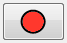

La trayectoria define por donde se mueve el personaje en una escena. Se pueden no utilizar, y el personaje simplemente se moverá hacia la derecha o la izquierda siempre desde la posición inicial. Es recomendable comprobar extensamente el funcionamiento correcto de la trayectoria en el juego. Algunas trayectorias muy complicadas (muchos caminos alternativos) puede probocar algunos retrasos en el movimiento del protagonista que perjudican la experiencia del usuario.
Añadir nuevo nodo
Cuando esta herramienta esta selccionada, se podrá añadir un nuevo nodo haciendo click en un espacio vacío o editar los nodos existentes (mover/escalar).
Añadir nuevo lado
Cuando esta herramienta esta seleccionada, se puede crear un nuevo lado entre dos nodos.
Para crear un lado, se debe hacer click en uno de los nodos y luego en el otro.
Establecer nodo inicial
Cuando esta herramienta esta seleccionada, se puede establecer el nodo incial de la trayectoria haciendo click sobre él.
Eliminar nodos y lados
Cuando esta herramienta está seleccionada, se puede elminar un nodo o lado haciendo click encima.